Spotify
UX Designer
J'ai conçu trois nouvelles fonctionnalités en suivant un processus de conception UX structuré. Mon approche impliquait des phases d'analyse, de prototypage et de tests utilisateurs, dans le but d'optimiser l'expérience et de répondre aux besoins des utilisateurs.
Logiciel
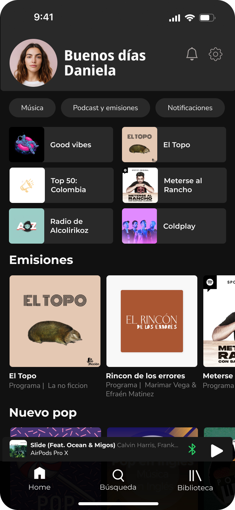
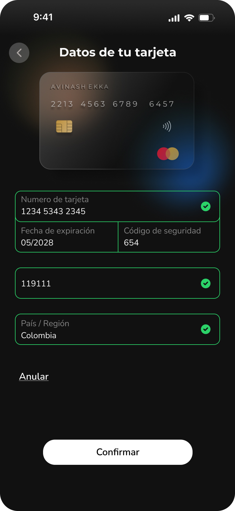
Utilisateurs De L'application
Parcours Utilisateur
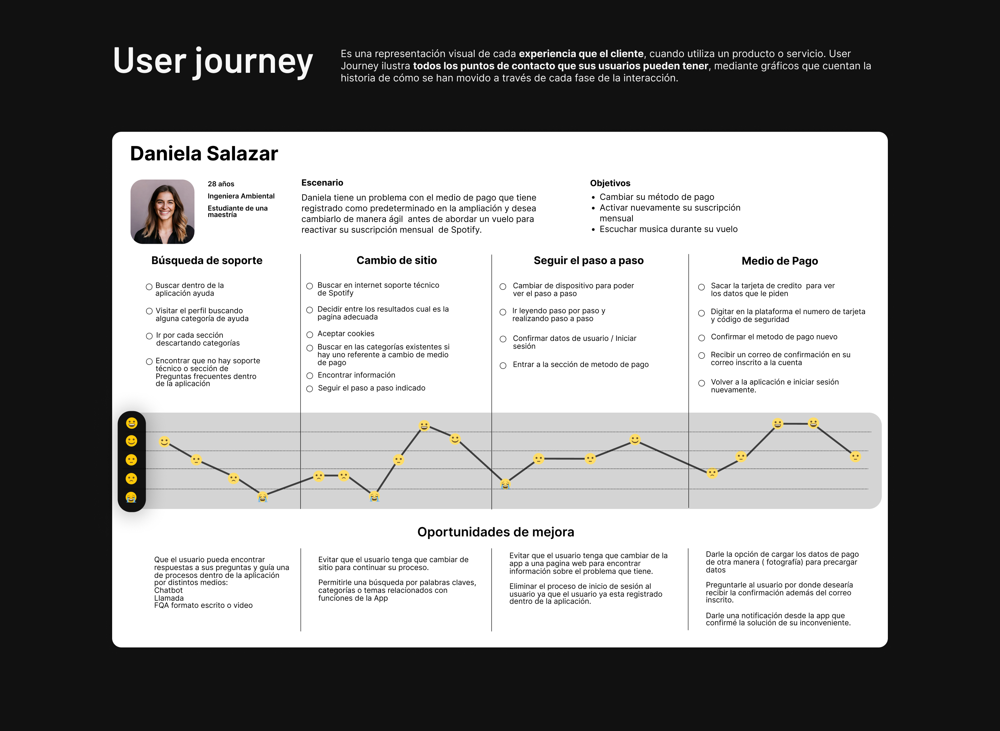
Actuellement, les utilisateurs de l'application signalent des problèmes concernant l'évaluation du contenu sur la plate-forme, la recherche et la classification du contenu enregistré et téléchargé, ainsi que le besoin d'options d'aide au sein de l'application pour résoudre les doutes ou les problèmes lors de l'utilisation.
- 11 utilisateurs ont entre 25 et 31 ans.
- 84 % des personnes interrogées aimeraient laisser un commentaire sur le contenu qu'elles consomment.
- 5 utilisateurs ont entre 18 et 24 ans.
- 75 % des personnes interrogées ont eu des difficultés à trouver des informations techniques.
- 100 % des personnes interrogées utilisent la version payante.
- 85 % des personnes interrogées sont satisfaites des fonctionnalités de l'application.
- Les gens utilisent Spotify principalement pendant leurs déplacements.
Tests d'utilisabilité
Valider
Confirmer si nos hypothèses sur le comportement des utilisateurs sont validées lors de l'interaction avec le prototype.
Analyser
Comprendre comment les utilisateurs interagissent avec le produit et avec les tâches confiées, afin d'identifier les différents chemins et options qu'ils choisissent, en mettant en évidence les opportunités d'amélioration et les points forts.
Apprendre
Obtenir des informations sur nos utilisateurs et la façon dont ils utilisent le produit repensé, en comprenant leurs pensées et leurs émotions lors de l'interaction.
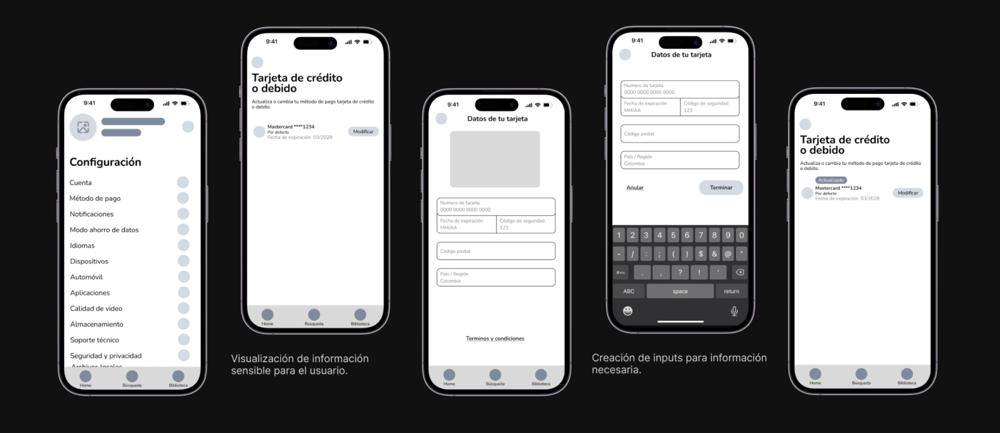
En tant qu'application mondiale de streaming musical, les utilisateurs sont divers. Cependant, pour ce test, nous avons sélectionné un échantillon de 5 jeunes adultes entre 25 et 35 ans, tous des professionnels actifs possédant des connaissances techniques avancées.
- Tatiana Guevara – 35 ans, designer industriel
- Manuel Santiago – 25 ans, cinéaste
- Kevin Oliveros – 26 ans, préparateur physique
- Anderson Martinez – 27 ans, chef
- Paula Romero – 25 ans, graphiste
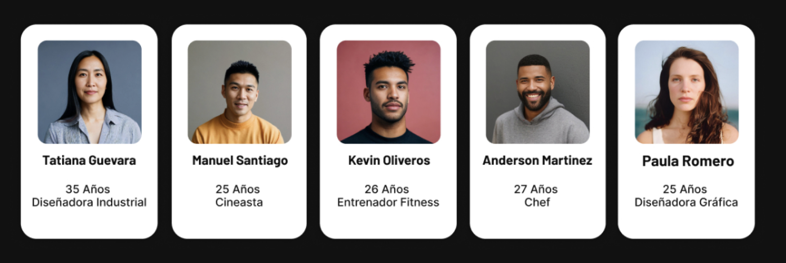
Nouvelles Fonctionnalités
Faire partie d'une communauté
Permettre aux utilisateurs d'évaluer et de commenter le contenu qu'ils viennent d'écouter. Lire les avis des autres utilisateurs sur le même contenu et interagir avec eux.
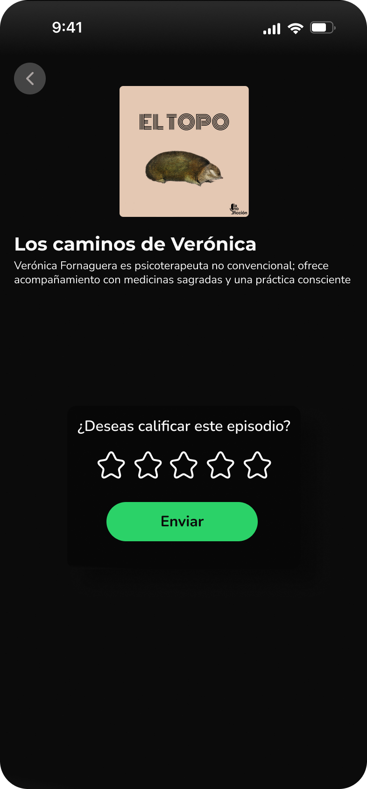
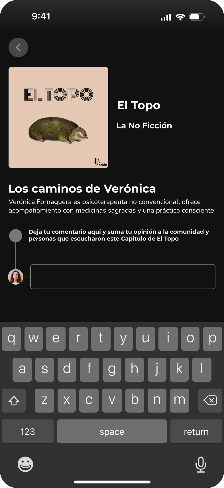
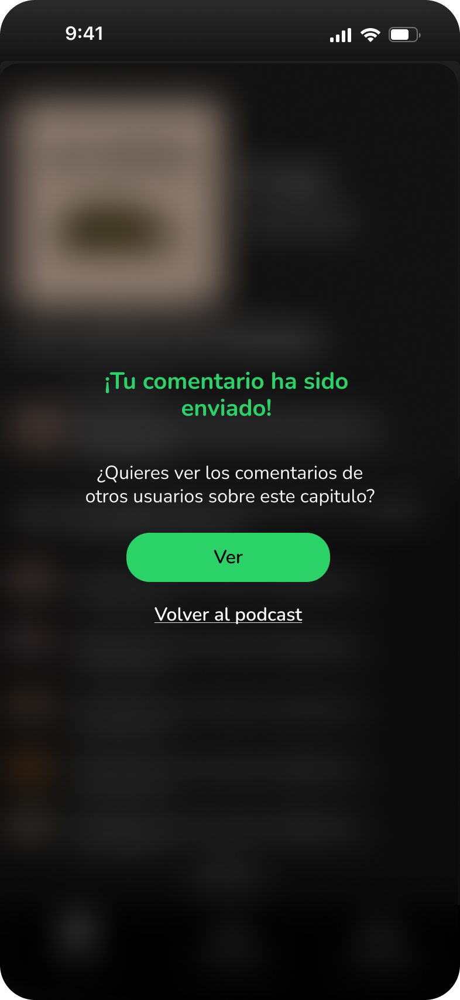
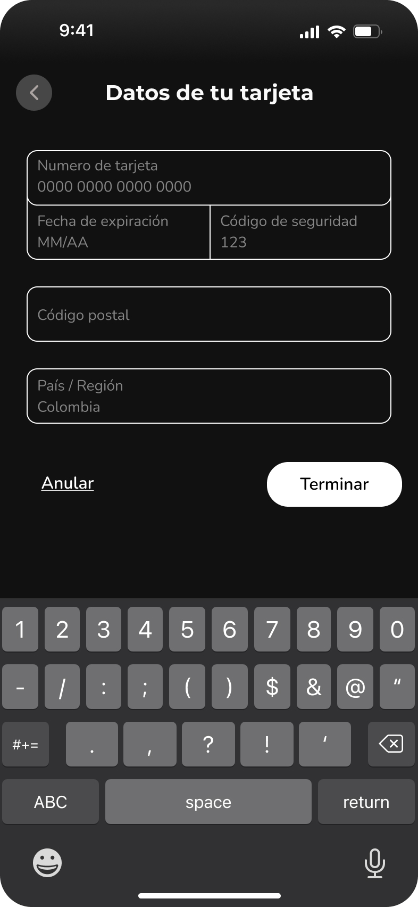
Profil simple et efficace
- Gérez facilement les modes de paiement : mettez-les à jour ou modifiez-les directement depuis la même interface.
- Efficacité utilisateur : en seulement trois étapes, la chanson sera enregistrée.
- Un espace dédié où les utilisateurs peuvent gérer plusieurs paramètres de compte.
Simple et rapide
Permettez à l'utilisateur de sauvegarder les chansons de la manière la plus simple possible et permettez-lui de choisir où il souhaite les stocker.
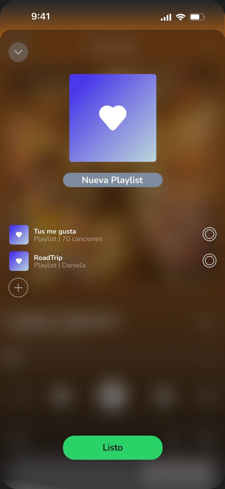
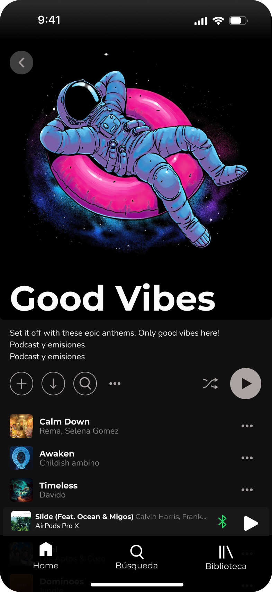
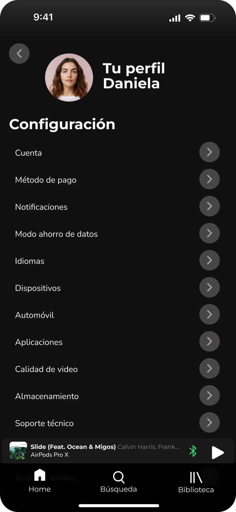